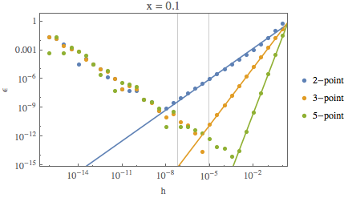
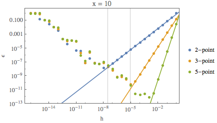

Mikhail Gaerlan
16 September 2015
Differentiate sin(x) and ex for x = 0.1, 10, and 100 using the 2-, 3-, and 5-point formulas.
Vertical lines represent theoretical optimum h.
sin(x) Data


ex Data
The number of decimal places of accuracy agree with sin(x). The number of decimal places of agree with ex for small values of x. Large values of x cause large values for the derivatives resulting in h to be smaller than machine precision.
| sin(x) | ||||
|---|---|---|---|---|
| x | 2-point calculated optimum $\displaystyle{h\approx\left(\frac{2\epsilon _m}{f''(x)}\right)^{1/2}}$ | 2-point actual optimum | 3-point calculated optimum $\displaystyle{h\approx\left(\frac{3\epsilon _m}{f'''(x)}\right)^{1/3}}$ | 3-point actual optimum |
| $0.1$ | $6.669559378\times 10^{-8}$ | $\sim10^{-9}$ | $8.748068878\times 10^{-6}$ | $\sim10^{-6}$ |
| $10$ | $2.857111795\times 10^{-8}$ | $\sim10^{-8}$ | $9.259499197\times 10^{-6}$ | $\sim10^{-5}$ |
| $100$ | $2.961440394\times 10^{-8}$ | $\sim10^{-8}$ | $9.175530780\times 10^{-6}$ | $\sim10^{-5}$ |
| ex | ||||
|---|---|---|---|---|
| x | 2-point calculated optimum $\displaystyle{h\approx\left(\frac{2\epsilon _m}{f''(x)}\right)^{1/2}}$ | 2-point actual optimum | 3-point calculated optimum $\displaystyle{h\approx\left(\frac{3\epsilon _m}{f'''(x)}\right)^{1/3}}$ | 3-point actual optimum |
| $0.1$ | $2.004566123\times 10^{-8}$ | $\sim10^{-9}$ | $8.447159163\times 10^{-6}$ | $\sim10^{-6}$ |
| $10$ | $1.419916157\times 10^{-10}$ | $\sim10^{-8}$ | $3.115579855\times 10^{-7}$ | $\sim10^{-5}$ |
| $100$ | $4.064536383\times 10^{-30}$ | $\sim10^{-8}$ | $2.915442161\times 10^{-20}$ | $\sim10^{-5}$ |
The following tables show the fits of the regions where the approximation error dominates.
| sin(x) | |||
|---|---|---|---|
| x | 2-point | 3-point | 5-point |
| $0.1$ | $\epsilon=0.23(4)h^{1.071(20)}$ | $\epsilon=0.1629(15)h^{1.9961(20)}$ | $\epsilon=0.0309(9)h^{3.978(11)}$ |
| $10$ | $\epsilon=0.78(4) h^{1.017(5)}$ | $\epsilon=0.1629(15) h^{1.9961(20)}$ | $\epsilon=0.0309(9) h^{3.978(11)}$ |
| $100$ | $\epsilon=0.35(6) h^{0.951(17)}$ | $\epsilon=0.1630(16) h^{1.9962(20)}$ | $\epsilon=0.0309(9) h^{3.979(11)}$ |
| ex | |||
|---|---|---|---|
| x | 2-point | 3-point | 5-point |
| $0.1$ | $\epsilon=1.29(11) h^{1.023(9)}$ | $\epsilon=0.1705(16) h^{2.0039(20)}$ | $\epsilon=0.0360(11) h^{4.022(11)}$ |
| $10$ | $\epsilon=1.29(11) h^{1.022(9)}$ | $\epsilon=0.1705(16) h^{2.0039(20)}$ | $\epsilon=0.0360(11) h^{4.022(11)}$ |
| $100$ | $\epsilon=1.27(11) h^{1.020(9)}$ | $\epsilon=0.1705(16) h^{2.0038(20)}$ | $\epsilon=0.0360(11) h^{4.022(11)}$ |